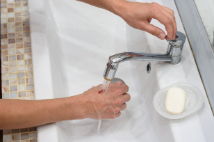
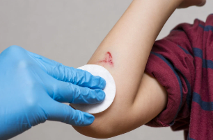

Step 1: Wash your Hands
Before touching the wound, wash your hands thoroughly with soap and warm water to avoid introducing bacteria.
If soap and water aren’t available, use hand sanitizer.
Step 2: Stop the Bleeding
For minor cuts and scrapes, bleeding usually stops on its own after a few minutes.
If the wound continues to bleed, apply gentle pressure using a clean cloth or gauze for 5–10 minutes.
Avoid using a tourniquet for minor cuts.
Step 3: Rinse the Wound
Hold the cut under clean, running water (use cool or lukewarm water) to rinse away dirt and debris.
Avoid using hydrogen peroxide or iodine at this stage, as these can be harsh and damage healthy tissue. Simple water is effective and gentle.

Step 4: Clean around the Wound
Use mild soap around the wound (but not directly inside the wound) to clean the surrounding skin.
Avoid Scrubbing the wound, as it can cause irritation or further damage.

Step 5: Apply an Antibiotic Ointment (optional)
Apply a thin layer of Antibiotic ointment, such as Neosporin or a generic version, to help prevent infection.
If you dont have an Antibiotic ointment petroleum jelly like Vasekine can keep the wound moist, which aids healing.
Step 6: Cover the Wound
Cover the cut with a sterile bandage or guaze pad to keep it clean and protect it from irritation.
For larger wounds, use a dressing (or bandage / bind) that won't stick to the wound
Addtional Information
Before touching the wound, wash your hands thoroughly with soap and warm water to avoid introducing bacteria.
After cleaning the wound, it’s important to take ongoing care to ensure proper healing. Change the bandage daily or whenever it becomes dirty or wet, and always inspect the wound for signs of infection, such as redness, swelling, or pus. While the wound heals, keep an eye on it, and seek medical attention if you notice increased redness, swelling, pus, yellowish discharge, increased pain, red streaks extending from the wound, or fever, as these are signs of infection. After a few days, once the wound begins to heal and forms a scab, you can leave it uncovered to allow it to breathe, which helps promote faster healing.
In conclusion, by following these steps and monitoring the wound closely, you can prevent infection and support proper healing. If any signs of complications arise, don't hesitate to seek medical advice for further care.